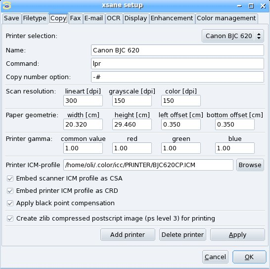

Index
XSane mode:

Scan options
Medium selection
Color management
Color correction:
Standard options window
Advanced options window
Preview:
Batch scan:
Setup:
|
You open the setup window via the menu preferences/setup in the
main window of xsane.

Name:
Define the name for the following printer definition.
Command:
Enter the command with which you print files. The command has
to read the file from the standard input. If you use the bsd printing system
this is "lpr", if you use the old printing system this should be "lp". When you
use KDE then you should try "kprinter --stdin".
Copy number option:
Enter the option of the printer command with wich the number
of copies are specified. If you use the bsd printing system (lpr) or kprinter
this is "-#", if you use the old printing system (lp) this should be "-n".
This option is the last option passed to the printerrcommand
so if you specify a ";#" then the option is ignored.
Resolution:
With resolution you specify the resolution that shall
be used for printing. It is not always necessary to set this value to the
resolution of the printer. Especially in grayscale and color mode it normally
is good to set this value to the half or the quarter of the printer resolution
because the printer needs a greater resolution to do the dithering. This
value does not effect a change of the image size, the image size only depends
on the given zoom factor.
Print area (width, height, left offset, bottom offset):
Each printer has it's own area size and position where it is able to print.
Printer gamma values:
Addidtional gamma value for printing. The Printer gamma value
is used for grayscale and as common value for color mode. The
red, green and blue values are for color correction.
Printer ICM profile:
Select the printer ICM profile. This profile is used for proofing and for printing!
Embed scanner ICM profile as CSA:
Embed the scanner ICM profile into the posctscript file (as Color Space Array).
When you have a postscript printer then you should enable this option. In this case
the scanner does the color transformation.
When disabled the color transformation is done by xsane.
Embed printer ICM profile as CRD:
Embed the printer ICM profile into the posctscript file (as Color Rendering Device).
When you have a postscript printer then you should try to disable this option - a good postscript
printer should know its own CRD.
When you use ghostscript or an other rendering software then it is possible that the
rendering software does not know the ICM profile of the printer. In this case (or when your
postscript printer does not know its CRD) you have to enable
this option. When enabled then the printer ICM profile is embedded into the postscript file.
When disabled the color transformation is done by xsane.
When embed scanner ICM profile as CSA is disabled then embed printer ICM profile as CRD
has no function because the color transformation is done by xsane.
Apply black point compensation:
When transformation is done then apply black point compensation. When CSA/CRD is embedded
then prepare embedded data for black point compensation.
|